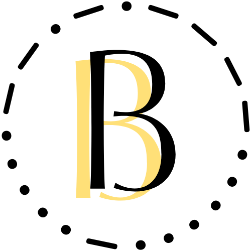
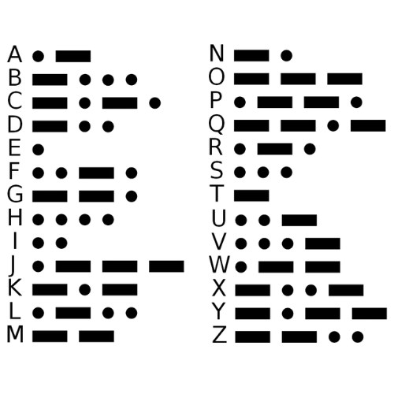

Beacode adalah sebuah merk aksesoris buatan tangan. Saat ini kami menjual cincin, gelang, serta kalung dengan
desain sederhana nan cantik. Kami mengusung tema kode morse, supaya aksesoris yang dipakai tidak hanya indah, melainkan
memiliki makna tersendiri bagi pemakainya.
Kode Morse atau 'Sandi Morse' adalah sistem representasi huruf, angka, tanda baca dan sinyal dengan menggunakan kode
titik dan garis yang disusun mewakili karakter tertentu pada alfabet atau sinyal (pertanda) tertentu yang
disepakati penggunaannya di seluruh dunia. Kode Morse diciptakan oleh Samuel F.B. Morse dan Alfred Vail
pada tahun 1835.
